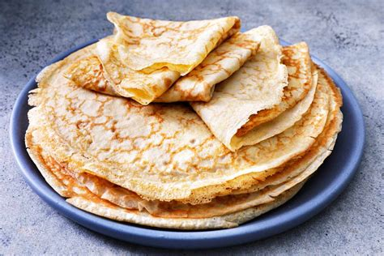

Receta de crepes

Caracteristicas
- Dificultad
- Raciones
- Tiempo
- Coste
Ingredientes
| Ingredientes | Cantidad | Notas | 2 huevos 150 g de harina 250 ml de leche 1 cucharada de azúcar 1 pizca de sal
|---|

| Ingredientes | Cantidad | Notas | 2 huevos 150 g de harina 250 ml de leche 1 cucharada de azúcar 1 pizca de sal
|---|